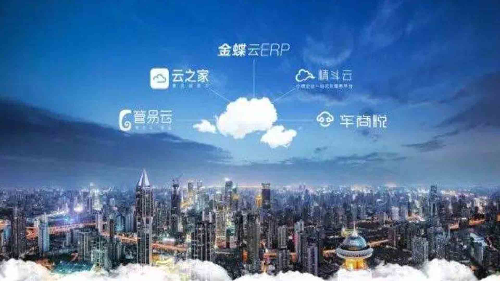

| 誉宏条码解决方案 — 面向精益生产的最佳管理模式
面临日益激烈的市场竞争，许多制造型企业实施了ERP/MRP等系统来帮助企业提升管理水平，增强企业应对竞争和变化的能力。然而上层生产计划管理受市场影响越来越大，企业明显感到计划跟不上变化。面对客户对交货期的苛刻要求，面对更多产品的改型，订单的不断调整，企业决策者认识到，计划的制订要依赖于市场和实际的作业执行状态，而不能完全以物料和库存回报来控制生产。同时ERP/MRP软件主要是针对资源计划，这些系统通常能处理昨天以前发生的事情（作历史分析），亦可预计并处理明天将要发生的事件，但对今天正在发生的事件却往往留下了不规范的缺口。因此，生产的现场管理一直处于黑箱作业的状态，这已无法满足今天复杂多变的竞争需要。因此如何将此黑箱作业透明化，找出任何影响产品品质和成本的问题，提高计划的实时性和灵活性，同时又能改善生产线的运行效率已成为每个企业所关心的问题。
生产管理条码解决方案强调对生产作业现场的管理，应用条码技术实现对生产作业过程中产生的大量的实时数据的自动化快速收集，并对实时事件及时处理。同时又与计划层（ERP/MRP）保持双向通信能力，从计划层接收相应数据并反馈处理结果和生产指令。生产管理条码解决方案有效解决制造企业在对生产现场作业管理的难题，使企业更轻松地管理生产数据，实现对生产制程、产品质量追溯、以及后续的库存及销售追踪的有效管理。
引入条码管理的必要性
生产作业现场会产生大量实时的有用数据，这些生产数据将对企业的快速决策起重要作用。
| 金蝶K/3远程接入
金蝶K/3 ERP系统集供应链管理、财务管理、人力资源管理、客户关系管理、办公自动化、商业分析、移动商务、集成接口及行业插件等业务管理组件为一体，以成本管理 为目标，计划与流程控制为主线，通过对成本目标及责任进行考核激励，推动管理者应用ERP等先进的管理模式和工具，建立企业人、财、物、产、供、销科学完 整的管理体系。 K/3系统属于服务器/客户端分布式部署模式，由于带宽、硬件设备等条件的制约，它所采用的分布式部署对系统的应用价值的发挥造成了阻碍。企业常用的办法 是优化网络环境、升级甚至更新硬件设备，由此造成的IT投入成本、运营维护的成本以及相应的管理成本给企业带来了巨大压力。
同时，客户机远程接入到服务器端应用程序时，所有信息通过互联网传输，对企业信息安全造成了严重威胁。 因此，如何把K/3的分布式部署整合起来；怎样利用有限的带宽提高系统访问的速度；同时还有保证数据的安全成了企业信息化过程中必须解决的问题。
誉宏远程E-SoonLink将应用程序的显示逻辑和计算逻辑分离，在服务器上100%地安装、管理、支持和执行应用程序，只有键盘信息、鼠标点击和屏幕刷 新信息在客户机和服务器之间传输，降低了对网络带宽的要求。同时，避免在每台电脑的重复安装、调试、更新应用软件，从而降低成本，提升工作效率，大大简化 部署与管理复杂的计算环境。它的优势主要表现在方便快捷地部署各种应用系统、确保分支机构的互联性、移动办公的灵活性、数据的安全性等四个方面。 通过部署誉宏远程异速联，将K/3软件实现集中部署和统一管理，软件的服务器端和客户端统一部署到总部数据中心服务器上，任何客户端都能够以WEB的形式访问，并更新数据，轻松实现了系统在广域网中的局域网应用。 由于是以总部的服务器为平台，数据的运算、保存都是在服务器上进行，客户端不会留下真实数据，在公网上传输的数据流也只是一些运算口令。以模拟数据流替代真实数据，大大减轻了网络传输的负荷，应用速度得到极大的提升，工作效率也相应提高。 异速联的集中部署使得K/3软件充分发挥了每个功能模块的优势，降低企业经营成本；它还简化企业IT的部署及维护，减少了IT建设费用支出；通过信息同步，各部门都能敏捷地预测、监控、跟踪、完成各自的指标和任务，提高企业的运作效率。
|誉宏短信接口
出库单已审核的客户单据，显示在主页面，用户选择要发送的客户，选择性的发送短信。 短信内容包括：出库单号、产品信息和用户自定义信息。
|誉宏设计
誉宏创作部主要为企业提供LOGO设计、VI设计、包装设计、海报设计、样本设计、画册设计(Catalogo设计)、手提袋设计、折页设计、产品摄影、网站设计。
我们以塑造和提升企业品牌形象作为自己的业务方向，以对中国本土市场、企业、消费者、文化的深刻理解和对世界潮流的准确把握，为客户提供原创性的、决定性的、系统性的、持续性的市场推动力；为发展中的企业提供准确有效的商业设计，同时提供灵活、高效、超值的服务。